| 日付 | 2018年7月29日（日） |
|---|---|
| メンバー | 家族（妻、長女・7歳、長男・5歳） |
| アクセス | 電車 |
今週末は台風が接近するため、山や海に行くことができない。
日曜は午後から天気が回復しそうなため、屋内施設であれば行けそうだ。
この機会に、前から気になっていたカップヌードルミュージアムに行ってみることにする。
桜木町から歩いてカップヌードルミュージアムに到着。
息子は駅周辺の景色を見て「ここ来たことある」と言っていた。
確かに2ヶ月前、三菱みなとみらい技術館に行った際に訪れている。
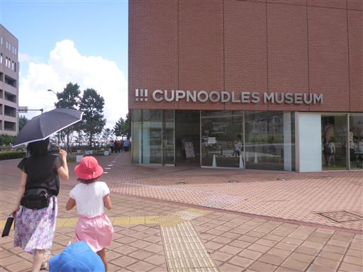
まずは、マイカップヌードルファクトリーの体験。
自分好みのカップヌードルを作成できる。
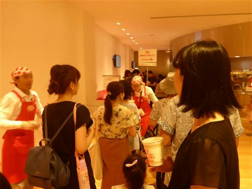
席に座ってカップに好きな絵を描く。
台風の影響で空いているかと思ったが、ものすごい人出だ。
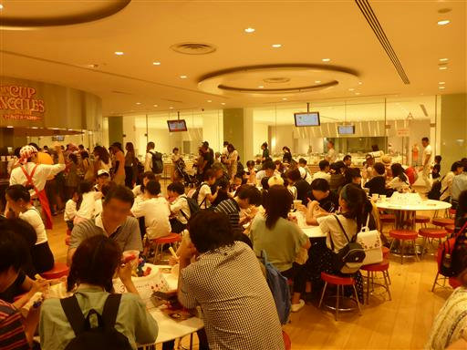
お次はカップに麺を入れる。
カップに麺を落とすと上手くいかないため、麺にカップを被せて
ひっくり返すと上手くいくらしい。
ハンドルを回すとカップがひっくり返る。
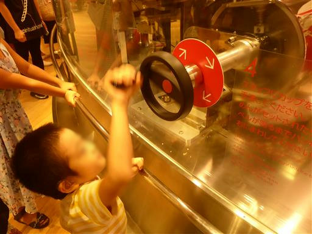
次に具材の選択。4種類選択できる。
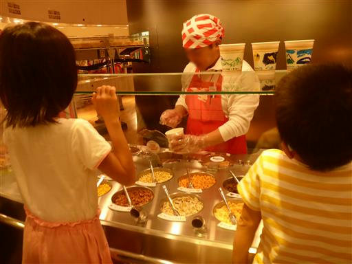
蓋をしてパッケージをして出来上がり。
残念ながら自分が手を動かすところはほとんどない。
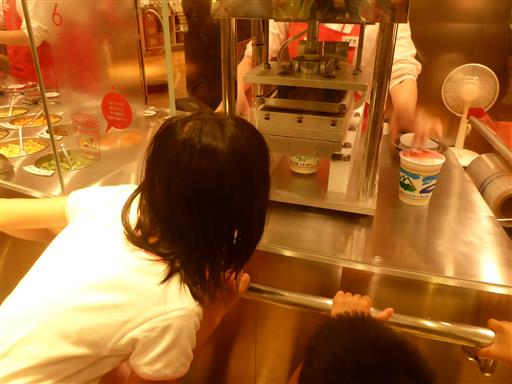
カップラーメンを食べられるかと思っていたのだが、持ち帰りになるらしい。
仕方がないので、上階のレストランで食事をとる。
様々な地域の麺料理を食べることができる。
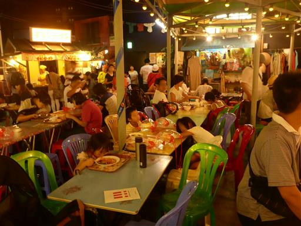
カップヌードルソフトクリーム。海老などの具は本物。
おいしいかと言われるとおいしくないのだが、ここでしか食べられないものではある。
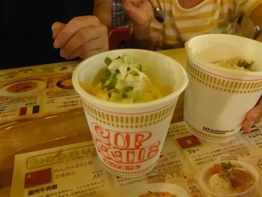
レストランが寒くて体が冷えたので、外のテラスに出て休憩。
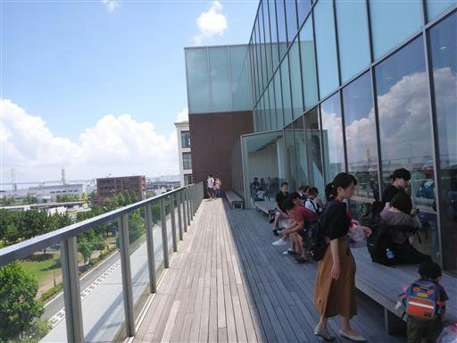
ここからは海が一望できて気持ちが良い。雲は多いが、きれいに晴れ渡っている。
この天気ならプールくらい行けたかもしれない…
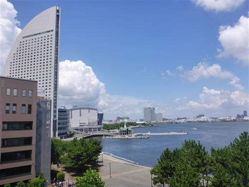
休憩したら、ミュージアムの見学を開始。
こちらはチキンラーメンの誕生ケーキ。もうすぐ60歳だそうだ。
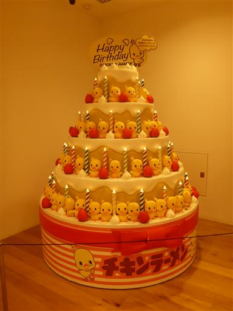
歴代の麺製品が並ぶ。ここまで多いと壮観だ。
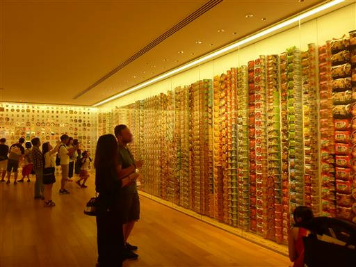
カップラーメンの開発者であり日清食品の創業者、安藤百福が
チキンラーメンの試作に取り組んだ小屋。
無一文から初めて、1年かけて完成させたらしい。
その間の活動資金をどうしたのかは、よく分からなかった。
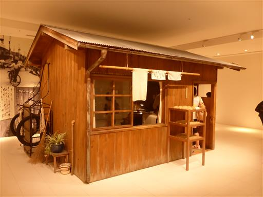
ミュージアムの見学を行っていると、息子がかなり飽きてきたため、カップヌードルパークに移動する。
小さなアスレチック施設で、ここでストレスを発散してもらう。
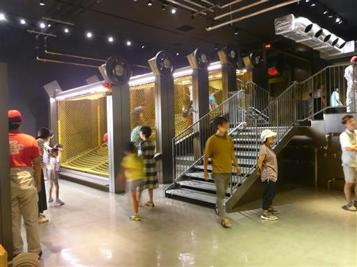
遊び終えたら、作ったカップヌードルを持って帰宅。
再訪するほどではないが、そこそこ楽しい施設だった。
マイカップヌードルを食べるのが楽しみだ。
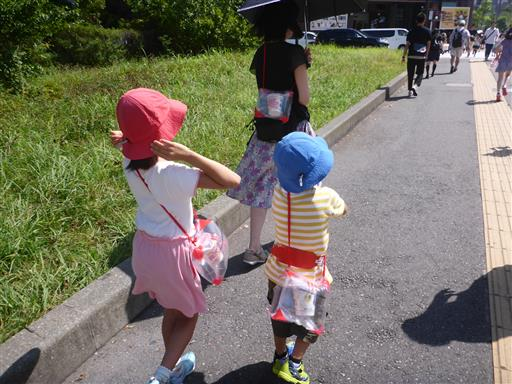